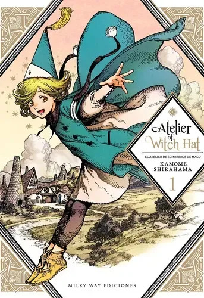
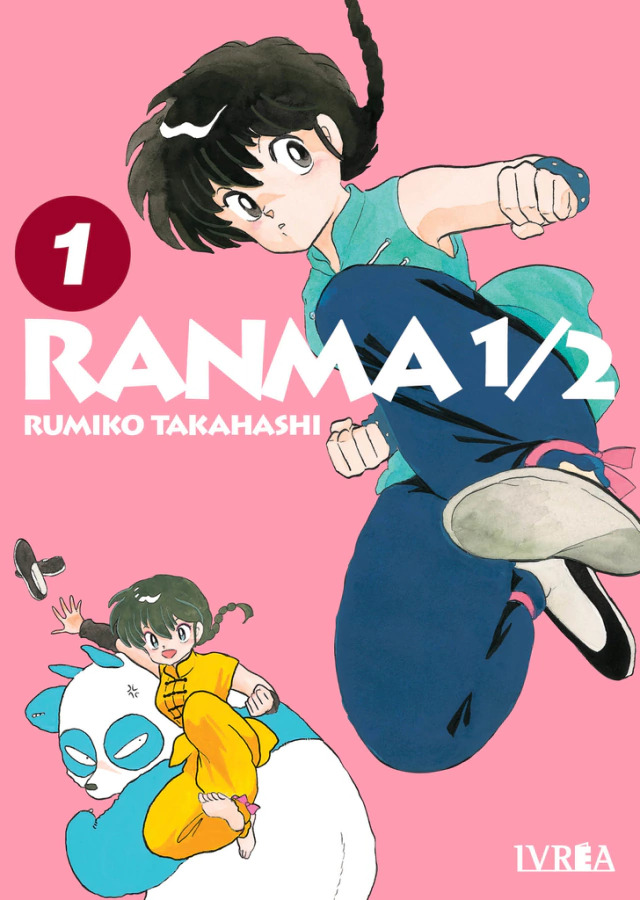

Acá dejo algunas de mis lecturas favoritas de distintas demografías, analizando a fondo la vida de sus protagonistas y los giros dramáticos que cambian sus vidas por completo.
Mis recomendaciones imperdibles
Akatsuki no Yona

Demografía: Shoujo
Sinopsis e inicio de la trama (Alerta de Spoilers): Yona es la única princesa del Reino de Kouka. Creció mimada, protegida de la realidad y enamorada de su primo Soo-won. Sin embargo, en su cumpleaños número dieciséis, su vida se destruye cuando Soo-won asesina a su padre para tomar el trono. Traicionada y en peligro, huye del palacio junto a Hak, su mejor amigo de la infancia y guardaespaldas, descubriendo en el camino que el gobierno de su padre no era tan perfecto como creía. Para intentar salvar a su nación, emprende la búsqueda de los cuatro dragones de la leyenda. Lo fascinante de esta obra es ver la enorme evolución de su protagonista femenina, combinando a la perfección intriga política, mucha acción y un desarrollo inolvidable.
Nana

Demografía: Josei
Sinopsis e inicio de la trama (Alerta de Spoilers): La historia sigue la vida de dos chicas jóvenes con el mismo nombre y edad que viajan a Tokio a empezar de cero. Nana Komatsu es una chica enamoradiza e ingenua que busca seguir a su novio a la capital, mientras que Nana Osaki es una cantante de punk decidida y apasionada que busca triunfar con su banda tras separarse del amor de su vida. A pesar de sus personalidades opuestas, cruzan sus caminos por casualidad en un tren y terminan viviendo juntas en el departamento 707, enfrentando rupturas, sacrificios personales, dependencia emocional y las duras realidades de la adultez.
Jujutsu Kaisen

Demografía: Shonen
Sinopsis e inicio de la trama (Alerta de Spoilers): Yuji Itadori es un estudiante de secundaria con una fuerza física sobrehumana que lleva una vida tranquila cuidando a su abuelo. Tras la muerte de este, Yuji se cruza con un objeto maldito de alto riesgo para salvar a sus compañeros de club y termina tragándose un dedo del legendario demonio Ryomen Sukuna, convirtiéndose en su recipiente. Aunque la primera temporada parece el típico viaje escolar de acción y hechicería, en realidad es una trampa deliberada para luego sumergir al protagonista y a los espectadores en un espiral incesante de sufrimiento, tragedias personales y dilemas morales oscuros.
Monster

Demografía: Seinen
Sinopsis e inicio de la trama (Alerta de Spoilers): La historia sigue al Dr. Kenzo Tenma, un prometedor e impecable neurocirujano japonés que trabaja en un prestigioso hospital de Alemania. Su carrera y su compromiso futuro parecen asegurados, hasta que un día decide priorizar su ética médica y salvar la vida de un niño huérfano herido de bala llamado Johan, en lugar de operar al alcalde de la ciudad. Años más tarde, Tenma descubre que aquel niño al que le salvó la vida creció para convertirse en un sociópata despiadado y manipulador. Lleno de culpa, Tenma se ve obligado a abandonar su vida acomodada y sus valores profesionales para perseguir a Johan e intentar matarlo.
Próximos mangas de los que voy a contar la sinopsis
Un pantallazo de los próximos títulos que se vienen al sitio para seguir analizando historias imperdibles.

